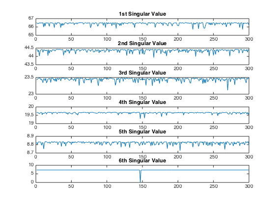

clear; close all;
one_of_these_data;
[U,S,V] = svd(X);
for i = 1:length(X)
Xtemp = X;
Xtemp(:,i) = [];
[Ut, St, Vt] = svd(Xtemp);
svals(:,i) = diag(St);
end
figure;
subplot(6,1,1); plot(svals(1,:)); title('1st Singular Value');
subplot(6,1,2); plot(svals(2,:)); title('2nd Singular Value');
subplot(6,1,3); plot(svals(3,:)); title('3rd Singular Value');
subplot(6,1,4); plot(svals(4,:)); title('4th Singular Value');
subplot(6,1,5); plot(svals(5,:)); title('5th Singular Value');
subplot(6,1,6); plot(svals(6,:)); title('6th Singular Value');
[minval,indx] = min(svals(6,:));
disp(['The vector that does not fit in is the column: ' num2str(indx) '.']);
disp(['When the vector is removed the 6th singular value drops down to: ' num2str(minval) '.']);
disp('The singular values when the 147th column is removed is as follows.');
svals(:,147)
The vector that does not fit in is the column: 147.
When the vector is removed the 6th singular value drops down to: 0.034489.
The singular values when the 147th column is removed is as follows.
ans =
66.5193
44.4064
23.4299
19.2957
8.8162
0.0345
